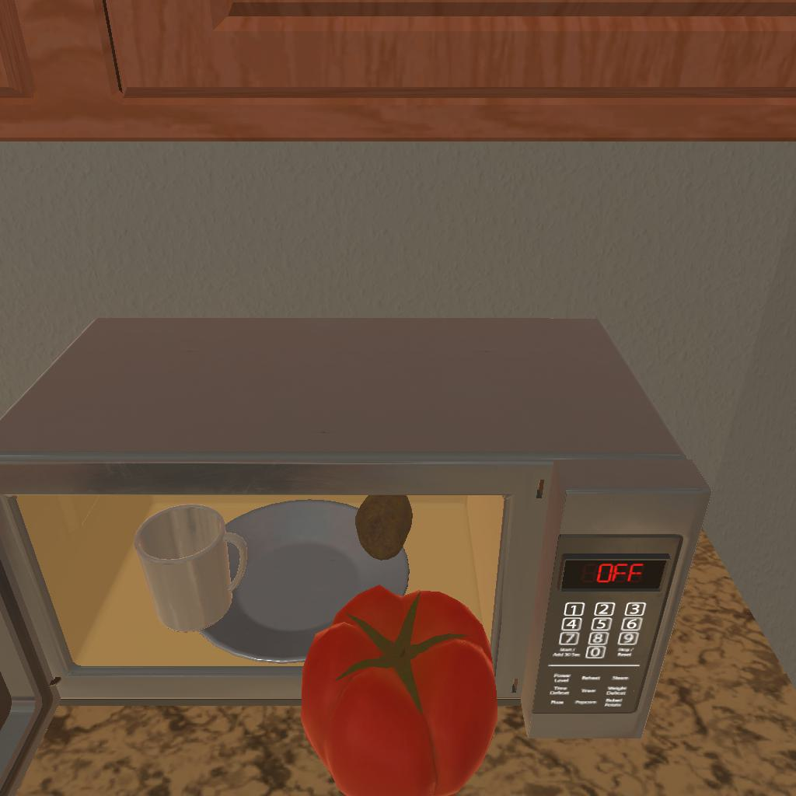
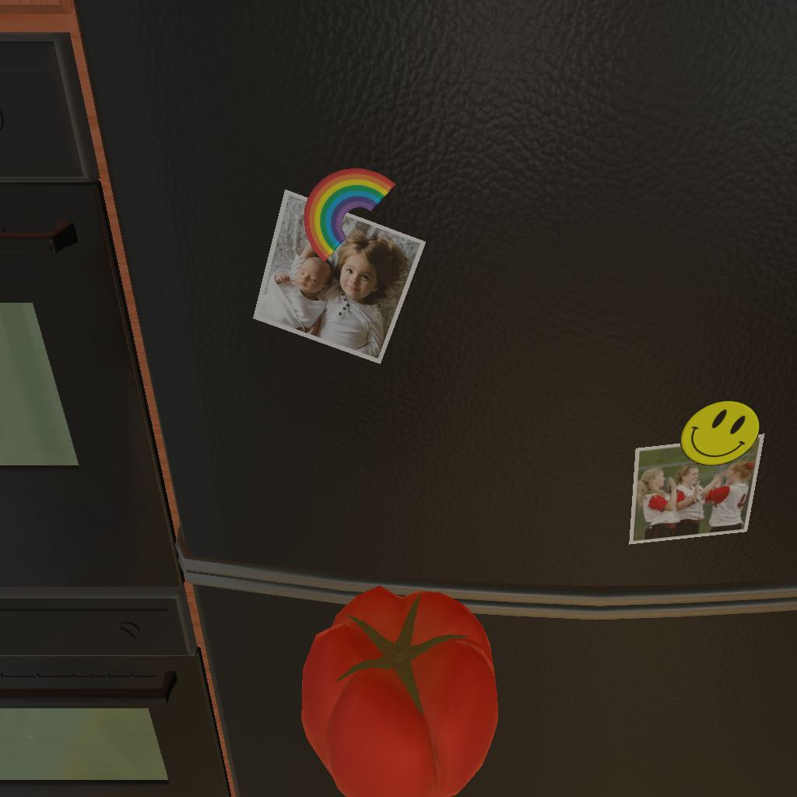

---------------------------------------------------------task: 19---------------------------------------------------------
--------------------------------------------------------------------------------------------------------------------------------------------------------------------
--------------------------------------------------------------------------------------------------------------------------------------------------------------------
Step:--------------------------------------------------------------------------17-------------------------------------------------------------------------------
----------------------------------------
VLM Prompt:
Image1:
Image2:
**Instruction**
1. Analyze the provided images to identify all visible household objects and compare the difference between images (e.h. whether the object is opened or not and taken on hand or not), focusing on those relevant to the task description "cool some tomato and put it in microwave."
2. Use the analysis of images and the task hint "The agent must find an object of the desired type, pick it up, go to a fridge, cool the object with the fridge, then find the correct location to place it, and put it down there. The agent does not need to use the fridge button or open the fridge to cool the object, and the agent just needs to do action that is "cool the object with the fridge"." to answer the question: what is the most reasonable action in the choices for the task description "cool some tomato and put it in microwave"?
3. Decide and write the answer using the template: The answer is: (i): , where i is the real number. If there is no desired object in images, search every place based on **Initial Observation** to find the object. And if no one is exactly correct, choose a similar answer.
**Initial Observation**
You are in the middle of a room. Looking quickly around you, you can see cabinet (1-15), fridge (1), countertop (1-4), drawer (1-4), microwave (1), toaster (1), coffeemachine (1), garbagecan (1), sink (1), stoveburner (1-3), sinkbasin (1)
**Answer Choices**
(1): go to cabinet 1
(2): go to cabinet 2
(3): go to cabinet 3
(4): go to countertop 1
(5): go to cabinet 4
(6): go to cabinet 5
(7): go to cabinet 6
(8): go to cabinet 7
(9): go to drawer 1
(10): go to drawer 2
(11): go to cabinet 8
(12): go to drawer 3
(13): go to cabinet 9
(14): go to cabinet 10
(15): go to drawer 4
(16): go to cabinet 11
(17): go to toaster 1
(18): go to cabinet 12
(19): go to cabinet 13
(20): go to cabinet 14
(21): go to cabinet 15
(22): go to countertop 2
(23): go to coffeemachine 1
(24): go to garbagecan 1
(25): go to countertop 3
(26): go to countertop 4
(27): go to sink 1
(28): go to stoveburner 1
(29): go to stoveburner 2
(30): go to stoveburner 3
(31): go to sinkbasin 1
(32): open fridge 1
(33): close fridge 1
(34): put tomato 1 in/on fridge 1
(35): cool tomato 1 with fridge 1
(36): examine tomato 1
(37): examine fridge 1
**Answer**
Let's think step by step by following the instructions.
----------------------------------------
----------------------------------------
Original Response:
Image Analysis:
In Image 1, there is a tomato placed on the countertop, a microwave is visible to the right, and it is turned off. Inside the microwave, there is a mug and a plate. There is no interaction with the fridge in this image.
In Image 2, the perspective is different, and the tomato is now placed on what seems to be the top of the fridge. There are also pictures with magnets on the fridge, but there is no interaction shown with the fridge.
Task Description Analysis:
Based on the task description "cool some tomato and put it in microwave," the logical sequence of actions would be to find a tomato, cool it with the fridge, and then put it in the microwave.
Initial Observation:
According to the initial observation, there is one fridge in the room.
Given Actions Analysis:
Based on the task and the images, we do not need to go to any cabinets, drawers, countertops, appliances, or other items listed from (1) to (37) except for the action related to the fridge and the tomato. The images show that the tomato is already found and placed on what seems to be the top of the fridge (Image 2). The agent does not need to use the fridge button or open the fridge to cool the object and just needs to perform an action that is "cool the object with the fridge."
Based on the instructions, the most reasonable next action for the task description would be to cool the tomato with the fridge.
The answer is: (35): cool tomato 1 with fridge 1.
----------------------------------------
----------------------------------------
>>> Refine Original VLM Response and Get Pure Action: cool tomato 1 with fridge 1
----------------------------------------
-----------------------------------------------------------------
Running time: 24.687891006469727 seconds
Total Money: 9.69873
-----------------------------------------------------------------
-----------------------------------------------------------------
Text Observation:You cool the tomato 1 using the fridge 1.
-----------------------------------------------------------------
UNSUCCEED